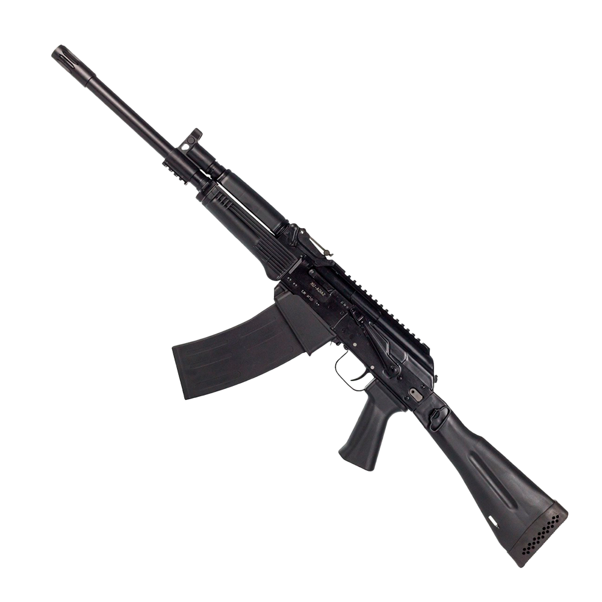
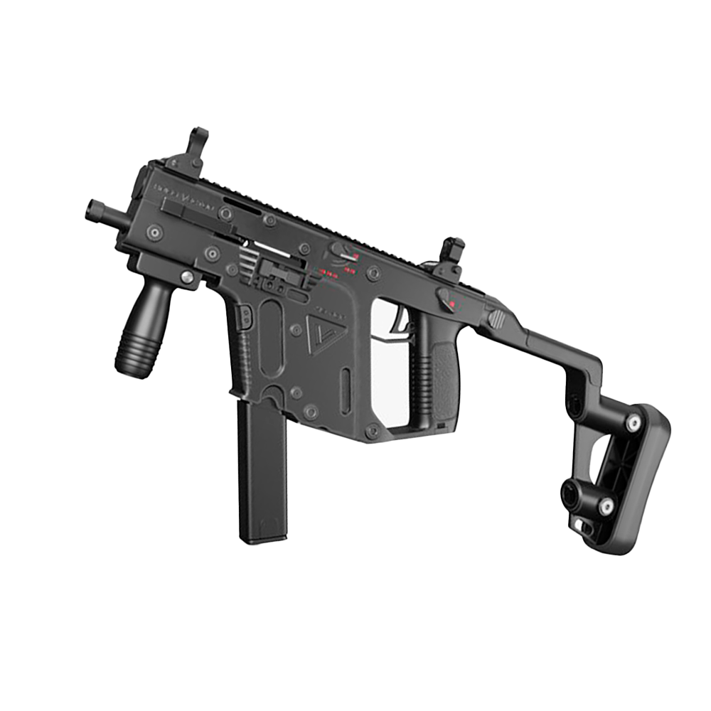
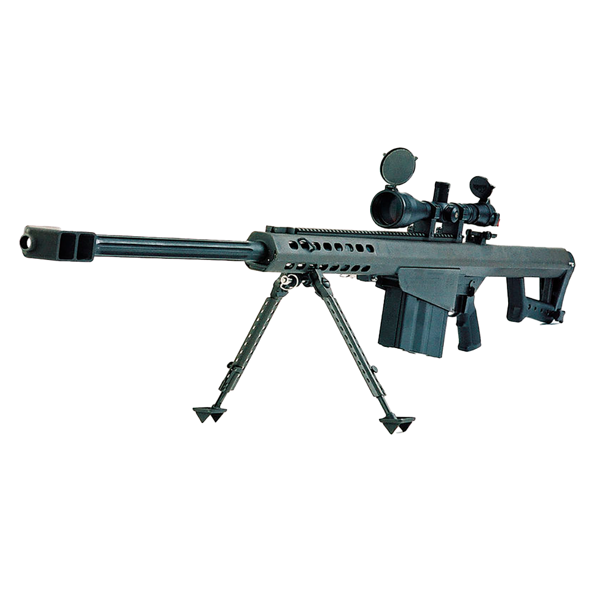

Автомат, принятый на вооружение в СССР в 1949 году; индекс ГРАУ — 56-А-212. Был сконструирован в 1947 году М. Т. Калашниковым после провала предыдущего образца, АК-46, на конкурсных испытаниях 1946 года. В АК использованы технические решения, позаимствованные у других конструкторов. АК и его модификации являются самым распространённым стрелковым оружием в мире, он включён в Книгу рекордов Гиннесса: насчитывается более 100 млн единиц этого автомата, он состоит на вооружении 106 стран мира.

Американская штурмовая винтовка калибра 5,56 мм, разработанная и принятая на вооружение в 1960-х годах. M16 и её модификации до настоящего времени остаются основным образцом стрелкового оружия всех пяти видов вооружённых сил, силовых структур и полицейских подразделений США, а равно и других стран мира. Это одна из наиболее распространённых моделей стрелкового оружия в мире — было выпущено более 8 миллионов экземпляров.
© Ермак В.М., Б9121-09.03.04, 2023-2024
✉ Контакты